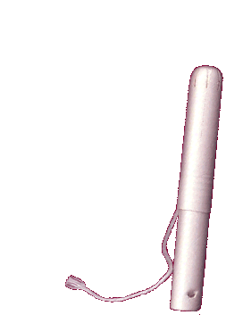
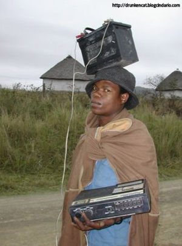

IPod
 De: La Frikipedia, la enciclopedia extremadamente seria.
De: La Frikipedia, la enciclopedia extremadamente seria.
| De la serie Aparatejos y gadgets inútiles:
|
| iPod
|
|
|
| Sirve para:
|
Reproducir música y virus
|
| Empresa desarrolladora:
|
Apple Machintosh
|
| Año de invención:
|
2001 o algo así
|
| Empresas que lo fabrican:
|
Únicamente Apple
|
| Nivel de maldad:
|
Quieren conquistar el mundo
|
Tiempo o vida inútil:
|
3 Años sin modificarlo
|
| ¿Se aconseja usarla?
|
Si estás conduciendo No
|
| ¿Se recomienda el boicot o uso de alternativas?
|
No eres tan fuerte para hacerlo
|
| Cantidad de llamadas al servicio al cliente:
|
Hay muchas porque iPod es en realidad...Nooooo!!!!
|
El iPod, o iPodre, es un pisapapeles-espejo-de-mano que también sirve para escuchar música en MP3 de "nuestros CDs originales" creado por windows Manzanita, cómo no, para Dominar el Mundo.
Manzanita ha creado hasta el día de hoy 6 generaciones de IPod, además de otros submodelos como el Ñoño o el Suflé.
Lo más destacable del iPodre es su composición, desconocida hasta el momento. Los expertos creen que se trata de algún tipo de aleación de kriptonita , manzanio y adamantium (polímero sintético elaborado por Apple) terriblemente adictiva. La característica más importante de esta aleación es su dureza, explicada en un gráfico que incluiremos en cuanto nos sea posible.
El iPod original podía contener de 5 a 10 MP3s de 3 segundos y era lo suficientemente frágil como para romperse con la brisa. Medía 10 metros de alto y 5.6 metros de ancho.
El último iPod fue lanzado hace como 2 años y que es exactamente lo mismo que un iPhone, pero no llama. Incluye un compartimento de 300tb exclusivo para porno, soniditos orgásmicos y demás mariconerías.
Funciona con el antiguo programa iTunes, con el que algunos enanos compraban música y un software especial exclusivo para Hasefroch, el Windows Virus.
Generaciones del modelo principal
 Uno de lo últimos modelos de iPod: El Suflé
- 1G: El pionero, el primer iPodre creado en el monte Jobs para Dominar el Mundo y someterlo a la voluntad de los Maqueros. Sus principales cualidades eran que pesaba, tenía pantalla, botones, reproducía MP3 y tenía una manzanita dibujada.
- 2G: Igual que el anterior, excepto que incluyó la mayor ¿novedad? que lo caracteriza: la Ruedecita de Dar Gusto. Con ella, el usuario/a podía frotar con su/s dedo/s para dar gusto al aparato que ronroneaba al sentirlo. Sus botones convencionales fueron sustituídos también por Botones de Dar Gusto.
- 3G: La principal novedad de esta generación fue la versión nueva y mejorada de la popular Ruedecita de Dar Gusto, que evolucionaba en la Ruedecita de Dar Gusto y que Además se Puede Pulsar.
- 4G: Este es el iPodre de los puteados, también conocido como iPodre Poto. Manzanita le metió como novedad al 3G una pantallita en color, un firgüer para fotos guarras, y le llamó iPodre Poto. La gente se lo compró, sin sospechar que tan sólo cuatro meses más tarde saldría el siguiente.
- 5G: El apodado iPodre Vidrio, incluye una pantallita en color un poco más grande, y la posibilidad de quedarte ciego viendo pelis porno en el water,
jalandotela haciéndote un favor.
- 6G: El actual iPodre, al que Manzanita apoda ahora iPodre Veterano, el ipod viejuco, ya no es vidrioso, sino opaco, aunque ahora trae 160 gigas para que quepa enterita tu biblioteca de videos guarros y puedas disfrutar de ella en donde te encuentres.
Otros modelos
 Aqui se puede apreciar el inventor con el primer prototipo del ipod: el ipod surgio en Africa/Burkina Faso en 1960
- Mini: Es la versión con la que la Flans.
- Ñoño: Este es el modelo de los pijos que no sabían lo que era un Ipodre hasta que lo vieron anunciado en la tele. Es más pequeño, por lo que es el primer iPodre que cabe en el bolsillo, con lo cual ya no sirve de espejo por su tamaño. Además, pesa menos, con lo que tampoco sirve de pisapapeles. Ah, sí, también reproduce MP3, ipod ñoño tiene una gran capacidad para ser rayado con las pesadas brisas de aire caliente que se producen a 500 kilómetros de chuck norris cuando realiza una patada voladora (microsoft copio la tecnología rompible de ipod ñoño para realizar su xbox 360).
- Ñoño Gordi: El modelo de iPod Ñoño, mas ancho y mas enano que el otro, ahora tambien sirve para ver pelis porno y viene en colores demasiado cutres como verde enfermera, azul hospital y rojo puto. Disponible también en negro.
- Ñoño flaco': Este es el mas reciente, exagerado de plano, widescreen por fin, brillantoso, con incluida una camara que no toma fotos (una camara que no toma fotos!! que será lo nuevo? un bluetooth por el que no te puedes pasar datos?)... ya no se usa tanto, pues cuesta masomenos lo mismo que el tocho con su pantalla tactil e internet..
- Suflé: Tiene poco espacio, no tiene pantalla y se pierde solo. Pero tiene una pinza, así que es útil para sujetar el pelo. Y además tiene una
Q manzanita dibujada.
- Tocho: El iPodre que todos desean tener, mueves un dedo y te hace el café, plancha la ropa, produce que las chicas se sientan atraídas a ti, sirve para ver llutub y demás cosas de pijos. En su ultima versión tiene una funcionalidad nueva que hasta le permite reproducir mp3. Conocido en el mundo anglosajón como iTouch, disponible incluso un modelo iTouch Myself.
el ipod tocho en todo su esplendor
- Emopod:Generalmente rosado o negro con cuchillas de afeitar a los lados por si a un usuario se le cruza una cancion que le recuerde su puta vida y lo demas ya saben...ademas en vez de traer juegos como el Parachute trae un juego llamado tiro a la vena que ayuda a entrenar a los emos principiantes.
Sabias que?
- Los empleados del servicio de aguas de la ciudad de Los Angeles encuentran mas de cien reproductores zune a lo largo del año en las alcantarillas de la ciudad?
- megatrun es un IPod
- Las baterías del marcapasos de un anciano se agotaron y un cirujano que pasaba por alli utilizo su ipod como solución improvisada aportando señales eléctricas con los cables de sus auriculares.
- El verdadero fin de los ipods es mandar un mensaje subliminal cada vez que le puchas para cambiar de cancion?
- Cada iPod cuesta 3.00 dolares y Steve Jobs se orina sobre cada uno de ellos?
- Más le entran virus al iPod que un reproductor MP3 de $450 MX
Autor(es):
- Krusher
- Doctor grijander
- Frikiman
- Alex2610
- Leo rain
- Loler
- Barbazeus Motsand
- Gusty
- Sastre
- DRAGONAZUL
Frikipedia 2005-2016, Licencia
GFDL 1.2 - Extraído por FrikiLeaks